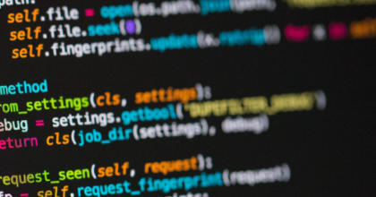
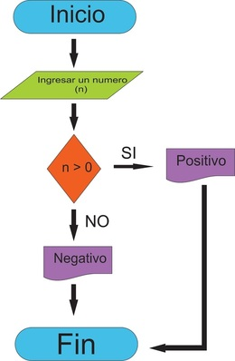
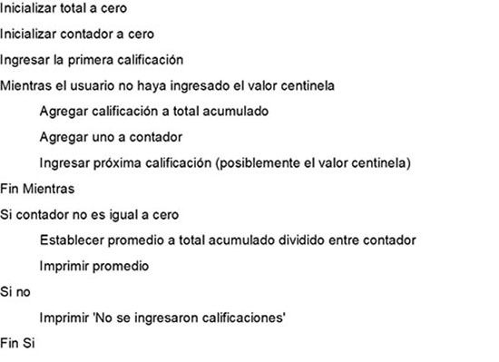
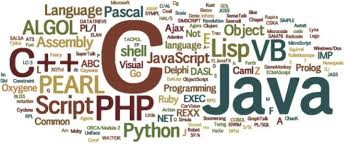
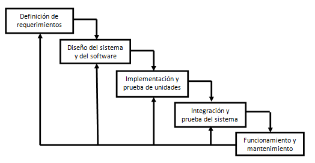

La programación informática es el proceso para diseñar, codificar, corregir y respaldar el código fuente del software en sus diferentes etapas de vida útil.
Mediante la programación se establecen las etapas necesarias y su secuencia para crear el código fuente de los programas computacionales.
El objetivo de la programación es la de crear software debidamente probado y perfeccionado, que después será ejecutado de manera directa por el hardware de la computadora, o a través de otro programa.
La programación junto con una herramienta como el computador, nos sirven para la resolución de problemas. Esta resolución de problemas consta de:
El primer paso, de análisis del problema o "análisis de requerimientos", requiere un estudio a fondo del problema y de todo lo que hace falta para comprenderlo; es en sí mismo objeto de estudio, con metodologías dirigidas al análisis para poder hacer un mejor estudio inicial y un control de todas las fases del “ciclo de vida” del desarrollo de software. Dichas metodologías se emplean en grandes proyectos de software.
Son requisitos preponderantes para alcanzar la mejor solución: una adecuada y completa definición del problema, y una detallada descripción de las especificaciones de entrada/salida.
La programación informática es una herramienta o medio para lograr fines como escribir un juego, hacer una aplicación web o una aplicación móvil.
Las computadoras fueron creadas a base de algoritmos, por eso estos procesos son fundamentales en la computación.

Y a propósito, un Algoritmo es un conjunto ordenado de operaciones sistemáticas que permite hacer un cálculo y hallar la solución de un tipo de problemas.
Los algoritmos son independientes tanto del lenguaje de programación en que se expresan como de la computadora que los ejecuta.
La metodología de la programación se utiliza para resolver problemas mediante los programas, y a su vez la resolución de un problema exige el diseño de un algoritmo acorde al problema a resolver.
El Pseudocódigo es una forma informal y cercana a nuestro lenguaje natural, de las tareas u operaciones que debe realizar un programa informático.
El pseudocódigo es un "lenguaje" de especificación de algoritmos.
Las principales ventajas de la utilización del pseudocódigo son: facilita al programador la planificación de un programa, concentrándose en la lógica y en las estructuras de control, y no ocuparse en las reglas de un lenguaje en particular;
es fácil de modificar si se encuentran o identifican errores o anomalías en la lógica del programa;
puede ser traducido fácilmente a lenguajes de programación estructurados.

Todos los Lenguajes de programación comparten algunos elementos básicos que funcionan y se usan de forma diferente en cada lenguaje, pero que cumplen el mismo objetivo. Esos elementos son:
El término Ciclo de vida del software describe el proceso necesario para la realización de un producto de software. Describir de manera formal los pasos que se deben llevar a cabo para garantizar la pertinencia, el cumplimientode los requerimientos especificados y documentados para la solución de software, así como los procedimientos y métodos adecuados del propio proceso de desarrollo.
Es necesario tener presente la calidad en todas las tareas y labores de realización del software, para minimizar los errores que puedan presentarse por diferentes factores y circunstancias, como en el mismo producto final de software; redundando en mejores plazos de implementación y optimizando los costos monetarios.
En el campo de la programación tenemos que plantearnos numerosas dudas e incertidumbres. La experiencia es muy importante y decisiva para resolver los desafiantes retos que nos plantea una labor como la programación.
Sin embargo, lo anterior no es un impedimento para avanzar, pues contamos con
Herramientas y ayudas que son muy importantes para aprender a programar. Ampliamos en la lexía secundaria, todos los elementos y aspectos para adelantar procesos de desarrollo de software; incluso por nuestros propios medios.
Lo primero es el interés y la disciplina, que como en cualquier cosa que emprendamos son estrictamente necesarias; y por supuesto se requiere mucha lectura, incluso en una segunda lengua como el inglés y de libros técnicos relacionados con temas de software y programación.
Otra buena estrategia es acudir a la consulta en foros, que incluso son especializados por lenguajes de programación y por temáticas específicas de estos, que si no nos solucionan el problema nos sugieren un camino factible. Adicionalmente podemos plantear nuestras preguntas en alguna de las comunidades virtuales online, donde podemos encontrar alguien con la experticia y/o los conocimientos necesarios para resolver las inquietudes.
Mantener apuntes personales resulta importante como fuente de consulta ordenada y organizada en el futuro, para ahorrar tiempo en temas que ya habíamos abordado.
En esta época de las redes sociales, del auge de las tecnologías y las comunicaciones, debemos estar atentos para obtener los mejores beneficios de recursos disponibles como tutoriales, cursos online y muchas otras herramientas de ayuda.